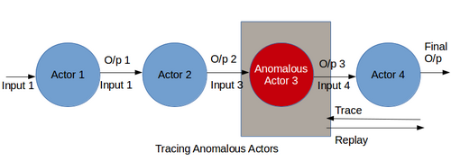

Executive Summary
In May 2026, at its Sapphire event, SAP declared the "Autonomous Enterprise." More than 200 specialized agents would run work in finance, procurement, and HR from start to finish, compressing financial closes that once took weeks into a matter of days. This piece looks past the shine of that declaration to the one box left empty beneath it: the agents running the company do not have an employee ID.
When a person is hired, an employee ID is issued, access is granted, and every action is recorded in a log. Yet the agents moving data and triggering approvals usually have none of the three. In a January 2026 survey by the Cloud Security Alliance (CSA) and Oasis Security, 78% of organizations had no formal policy even for creating and retiring an AI agent's identity. When the audit team asks "who triggered this approval?", there is no ledger to answer with.
The real infrastructure of the autonomous enterprise is not a smarter agent. It is a system of data identity and lineage that tracks and verifies who accessed which data and did what. The speed of autonomy cannot outrun the maturity of data governance. So the question this piece hands back at the end is a single one: is your company's agent an "employee," or a "ghost"?
Key Figures
Four numbers capture the gap most compactly. On one side, autonomous enterprises are spinning up with hundreds of agents, and a single large company will soon run them by the thousand. On the other, the policy to govern those agents' identities is empty in most organizations, and agents already outnumber people by dozens to one. Speed and governance have never drifted this far apart.
Sources: SAP News · Strata.io (CSA · Oasis survey)
200+
SAP Autonomous Enterprise agents
Across finance, procurement, HR, and CX, running alongside 50+ Joule assistants
78%
Organizations with no identity policy
No formal policy to create or retire agent identities (CSA · Oasis, Jan 2026)
82 : 1
Agent-to-human ratio
AI agents outnumber human users 82 to 1 (Rubrik Zero Labs)
1,600
Avg. agents by end of 2026
Agents a single large enterprise will operate (IBM projection)
200 Agents Have Started Running the Company
The picture SAP painted at Sapphire in May 2026 was unambiguous. More than 200 specialized agents and over 50 Joule assistants work across finance, supply chain, procurement, HR, and customer experience. They are designed not as helper tools that nudge a person one step at a time when a button is pressed, but as actors that carry work from beginning to end on their own.
The effect shows up in units of time. An autonomous close assistant compresses a financial close that took weeks into days. On the asset-management side, agents analyze historical failure data, pinpoint root causes, and generate maintenance instructions automatically — as in the case applied to the offshore wind installations of the German utility RWE. ERP migration effort dropped by more than 35%. At that point an agent is no longer a pilot project but a working hand running the company.

What is striking is that SAP itself stressed governance the most. On top of a context layer that ties together a knowledge graph and more than 7 million data fields, SAP added a governance layer called the SAP AI Agent Hub, slated for general availability in the third quarter of this year. An isolated execution environment built with NVIDIA keeps agents from over-reaching into systems. CEO Christian Klein's words compress the reason: "In mission-critical processes, 'almost right' is not good enough. You have to anchor AI agents to business processes, data, and governance."
When a company selling the platform stresses governance with its own mouth, that is also a signal that governance is the weakest link. Saying agents must be "anchored" to data and governance means that, right now, most agents are not anchored that way.
78% Leave Their Agents as Ghosts
A January 2026 survey from the Cloud Security Alliance (CSA) and Oasis Security puts a number on that weak link. 78% of organizations had no formal policy for creating and retiring AI agent identities. 92% were not confident that their existing identity and access management (IAM) systems could properly handle the risk of non-human identities like AI. The agents are already inside and working, yet only one in five companies has decided how to onboard and offboard them.
Given the scale, this gap is not trivial. In a tally by the security firm Rubrik Zero Labs, AI agents already outnumber human users 82 to 1. IBM projects that by the end of 2026 a single large enterprise will run an average of 1,600 agents. No one would let a person touch the corporate ERP without an employee ID. Yet the ID-less version of that presence is about to reach 1,600.
Look at how the agents authenticate, and the texture of the problem grows sharper. 44% of agents authenticate with static API keys, 43% with usernames and passwords, and 35% with shared service accounts — all legacy methods built on the assumption of a human. When ten agents hide behind one shared account, there is no way to tell which of them did what. Having no identity does not merely mean having no name tag; it means an action cannot be traced back to the actor that took it.

Without Identity, You Can't Ask Who Did It
Without identity, the first thing to collapse is accountability. When the audit team asks "who triggered this approval?", the action of an agent moving through a shared account cannot be narrowed to a specific actor. In the CSA · Oasis survey, only 28% of organizations said they could trace an agent's action back to the person responsible for it (its sponsor) across all environments. The rest may know what happened, but cannot climb back to who started it.
The permission problem is even more direct. In an analysis by the security firm Entro Security, 97% of non-human identities held excessive permissions beyond what their actual work required. A person has their access revoked when they change departments; an agent's permissions, once opened wide, tend to be left that way. When an over-privileged agent misbehaves, the blast radius reaches far past the work it was first meant to do.
More troubling still is when no one even knows how to stop it. In data from the AI company Writer, 35% of organizations had no way to forcibly shut down an agent showing anomalous behavior. With a person you can revoke the badge and lock the account; an agent set loose without an identity offers no clear answer to where or how it should be stopped.

Now regulators are beginning to hold this gap to account. The EU AI Act enters full enforcement from August 2026, requiring documentation of data provenance for high-risk AI systems, and the U.S. NIST AI Risk Management Framework 1.1 spells out auditing, traceability, and logging. The U.S. Financial Industry Regulatory Authority (FINRA) added a generative-AI section to its 2026 oversight report for the first time, requiring explainability and auditability of automated financial decisions. "We can't trace it" is no longer an excuse — it is grounds for a violation.
The Real Infrastructure Is Data Identity and Lineage
The starting point of the fix is surprisingly simple: apply to agents the same way we bring people into a company. When you are hired, an employee ID is created, permissions matched to your role are granted, and every access and action is recorded. An agent needs the same three things — who it is (agent ID), which data it may reach (access scope), and what it actually did as a result (action lineage).
Of the three, the box most often left empty is the last. Treat identity and permissions as an IT-security problem and you stop at ID issuance and access control. But what truly matters in the autonomous enterprise is which data the agent pulled in, what transformations it passed through, and what decision it reached — that is, data lineage. If you cannot trace the basis of a single approval or maintenance order back to the data, then verification is impossible even with an identity in place. Why lineage that follows a data point's origin and transformations all the way through is the foundation of an AI pipeline is something we covered in an earlier piece.

The companies out front are heading in the same direction. Snowflake's agent context layer makes the basis of an answer traceable, recording which sources were used and which transformations were applied — the data lineage along with it. Salesforce makes "data and semantic first" the first principle of its agent architecture and treats quality, lineage, governance, and access tooling as essentials. ServiceNow's AI Control Tower monitors agent behavior in real time and manages the lifecycle. This is not a race for smarter models; it is a race for tracking and verification infrastructure.
The movement is spreading beyond individual vendors' products into standardization. The IETF, which sets internet standards, published a draft Agent Identity Management System (AIMS) in March 2026. It ties together WIMSE, which defines workload identity; SPIFFE/SPIRE, which proves identity between services; and OAuth 2.0, which delegates permissions — an attempt to give agents a verifiable identity equivalent to a person's employee ID. The work has already moved past the stage where each company bolts a governance layer onto its own platform, toward nailing down agent identity as a shared industry specification.
Here is the one line Pebblous sees in all of this. The speed of autonomy cannot outrun the maturity of data governance. Budget and time can take you from 100 agents to 1,600, but whether you can explain what those 1,600 did depends on how much data identity and lineage you have put in place. Autonomy you cannot verify is not autonomy — it is neglect.
Employee or Ghost: A Self-Audit
So in the end the question comes back to each company. Is your company's agent closer to an employee with an ID, or to a ghost drifting nameless through your systems? You do not need an elaborate diagnostic tool. Answering four questions reveals where you stand right now. The figure in parentheses is the share of organizations that answered "yes" in the surveys cited above.
1. Inventory — Do you have a real-time list of the agents currently in operation? (21%)
2. Accountability — Can you trace an agent's action back to the person responsible for it? (28%)
3. Kill switch — Can you instantly stop an agent that is behaving anomalously? (35% have no means to shut one down)
4. Data lineage — Does your data-governance roadmap include agent identity and lineage as line items?
Organizations that can answer "yes" to all four are rare. So the aim of this piece is less to hand you an answer than to help you gauge your position. The autonomous enterprise is not the work of bringing in more agents; it is the work of issuing an employee ID to each agent you bring in and being able to open the ledger of the data it touched. The governance layer SAP stressed, the lineage Snowflake records, and the data-first principle Salesforce leads with all point to the same place. The shine of autonomy is made by the model; the trust of autonomy is made by data governance.
References
Industry Sources
- 1.SAP SE. (2026, May 12). SAP Sapphire 2026: SAP Unveils Autonomous Enterprise. news.sap.com
- 2.SAP SE. (2026, May). SAP Sapphire 2026 Keynote: Business AI Platform to Power the Autonomous Enterprise. news.sap.com
- 3.NVIDIA. (2026). ServiceNow and NVIDIA Advance Autonomous AI Agents for Enterprises. blogs.nvidia.com
- 4.Prosus. (2026). State of AI Agents 2026: Autonomy Is Here. prosus.com
Research & Survey Reports
- 5.Cloud Security Alliance & Oasis Security. (2026, January). AI Agent IAM Framework: Enterprise Gap. labs.cloudsecurityalliance.org
- 6.Strata Identity. (2026). The AI Agent Identity Crisis: New Research Reveals a Governance Gap. strata.io
- 7.Rubrik Zero Labs. (2026). The State of Data Security 2026. (AI agents to human users = 82:1)
- 8.Beam AI. (2026). IBM Says Enterprises Will Run 1,600 AI Agents by Year-End: 70% Can't Govern the Ones They Have. beam.ai
- 9.Agentic AI Institute. (2026). Agentic AI Enterprise Adoption 2026: The Governance Gap. agenticaiinstitute.org
- 10.Entro Security. (2025). State of Non-Human Identity Security 2025. (97% of non-human identities hold excess permissions)
Standards & Regulations
- 11.European Parliament & Council of the EU. (2024). Regulation (EU) 2024/1689 — Artificial Intelligence Act. eur-lex.europa.eu
- 12.National Institute of Standards and Technology. (2026, March). Artificial Intelligence Risk Management Framework (AI RMF) 1.1. airc.nist.gov
- 13.Financial Industry Regulatory Authority. (2026). FINRA 2026 Annual Regulatory Oversight Report. finra.org
- 14.Internet Engineering Task Force. (2026, March 2). Agent Identity Management System (AIMS) — Draft Framework. (Integrates WIMSE, SPIFFE/SPIRE, and OAuth 2.0 for verifiable agent identity)